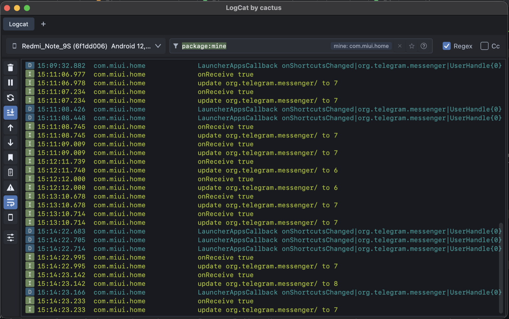

Найти нужную строку в Logcat — одним запросом Find the right Logcat line with one query
Отдельное приложение для macOS и Windows и плагин для Android Studio. Один язык фильтра в обоих: вы пишете условие, а не листаете тысячи строк. A standalone app for macOS and Windows plus an Android Studio plugin. One filter language in both: you write a condition instead of scrolling through thousands of lines.
- Открытый код, Apache 2.0Open source, Apache 2.0
- adb уже внутриadb is bundled
- Данные не уходят в сетьNo data leaves your machine
Это живой фильтр на выдуманных логах — он работает прямо в браузере и понимает основные ключи приложения. This is a live filter over made-up logs. It runs in your browser and understands the app's main keys.

filter
Язык фильтраFilter language
Условия складываются через пробел (это «И»). Тот же синтаксис работает в приложении и в плагине, с автодополнением ключей. Terms are combined with a space (that means AND). The same syntax works in the app and in the plugin, with key autocompletion.
package:mine | Приложение, которое сейчас открыто на экране телефона. Или конкретный пакет: package:com.example.The app currently on the phone's screen. Or a specific package: package:com.example. |
|---|---|
level:warn | Этот уровень и выше: предупреждения и ошибки.This level and above: warnings and errors. |
tag:Network | Тег содержит строку. Точное совпадение — tag=:MyApp, регулярное выражение — tag~:My.*Tag.The tag contains the string. Exact match: tag=:MyApp, regular expression: tag~:My.*Tag. |
message:"receiver mode" | Текст сообщения; фразы берите в кавычки. Так же работают process: и line:.The message text; put phrases in quotes. process: and line: work the same way. |
age:5m | Только записи за последние 5 минут. Суффиксы: s, m, h, d.Only entries from the last 5 minutes. Suffixes: s, m, h, d. |
is:crash | Краши и ANR.Crashes and ANRs. |
-tag:Noise | Минус исключает. Также есть | («или») и скобки: (tag:Net | tag:Http) level:error.A minus excludes. There is also | (OR) and parentheses: (tag:Net | tag:Http) level:error. |
features
Что ещё внутриWhat else is inside
Всё, что обычно нужно, когда разбираешь баг на живом телефоне. Everything you usually need when chasing a bug on a real phone.
- ВкладкиTabs
- У каждой вкладки своя сессия: устройство, фильтр и поток логов не мешают друг другу.Each tab has its own session: device, filter and log stream stay independent.
- Краши и ANRCrashes and ANRs
- Находятся автоматически, стектрейсы сворачиваются, по ним можно переходить стрелками.Detected automatically, stack traces fold, and you can jump between them with arrows.
- Баг-репорт в один кликOne-click bug report
- Markdown с устройством, версией приложения, фильтром и нужными строками: закладки или хвост видимого лога.Markdown with the device, app version, filter and the relevant lines: bookmarks or the tail of the visible log.
- ЗакладкиBookmarks
- Отметьте строки, и они попадут в баг-репорт и сохранённую сессию.Mark lines and they go into the bug report and the saved session.
- Телефон под рукойThe phone at hand
- Скриншот, перезапуск и остановка приложения, очистка данных, deep link, информация о приложении.Screenshot, restart and force-stop an app, clear its data, open a deep link, app info.
- Wi-Fi ADB
- Подключение по Wi-Fi из меню: из USB, по коду сопряжения (Android 11+) или по IP:порт, плюс сканирование сети.Connect over Wi-Fi from the menu: from USB, by pairing code (Android 11+) or by IP:port, plus network scan.
- JSON, Intent, URL
- Ссылки кликабельны, JSON и Intent раскрываются в читаемый вид из контекстного меню строки.Links are clickable; JSON and Intent expand into a readable form from the row's context menu.
- Сессии и сравнениеSessions and compare
- Сохраняйте лог в файл, открывайте в новой вкладке и сравнивайте два запуска.Save a log to a file, reopen it in a new tab and compare two runs.
- Лёгкий списокA light list
- Список рисуется одним холстом: по замерам процессор нагружен в 1,7–2,4 раза меньше, чем при отдельном элементе на строку.The list is drawn on a single canvas: measured CPU use is 1.7–2.4× lower than with one UI node per row.
- Тема в JSONJSON theme
- Цвета меняются файлом
~/.logcactus/theme.jsonи применяются сразу, без перезапуска.Colours are changed with~/.logcactus/theme.jsonand apply instantly, no restart. - Для AI-агентовFor AI agents
- Встроенный MCP-сервер: агент читает логи и краши, но ничего не меняет. По умолчанию выключен и слушает только 127.0.0.1.A built-in MCP server: an agent can read logs and crashes but change nothing. Off by default and listens on 127.0.0.1 only.
- adb и aapt2 внутриadb and aapt2 inside
- Ничего устанавливать не нужно: с приложением идут свои adb и aapt2, поэтому в списке приложений есть значки и названия.Nothing to install: the app ships its own adb and aapt2, so app lists show icons and names.
download
СкачатьDownload
Бесплатно, без регистрации. Файлы берутся из последнего релиза на GitHub. Free, no sign-up. Files come from the latest GitHub release.
macOS
Для Apple Silicon (M1 и новее). Подписано Developer ID и нотаризовано Apple, поэтому открывается без обходных путей.For Apple Silicon (M1 and later). Signed with Developer ID and notarized by Apple, so it opens without workarounds.
Intel-Mac не поддерживается.Intel Macs are not supported.
Скачать .dmgDownload .dmgWindows
Установщик .msi с ярлыком и пунктом в меню «Пуск».An .msi installer with a desktop shortcut and a Start menu entry.
Установщик ещё не подписан: SmartScreen покажет предупреждение, нажмите «Подробнее» → «Выполнить в любом случае». Подпись подключаем через SignPath Foundation.The installer is not signed yet: SmartScreen will warn you; click “More info” → “Run anyway”. We are setting up signing through SignPath Foundation.
Страница релизаRelease pageAndroid Studio
Плагин для Android Studio 2026.1 и новее. Settings → Plugins → ⚙ → Install Plugin from Disk, затем перезапуск Студии.A plugin for Android Studio 2026.1 and newer. Settings → Plugins → ⚙ → Install Plugin from Disk, then restart the IDE.
Архив подписан самоподписанным сертификатом: целостность проверяется, но издатель не считается доверенным у JetBrains.The archive is signed with a self-signed certificate: integrity is verified, but JetBrains does not treat the publisher as trusted.
Скачать плагин .zipDownload plugin .zipКонтрольные суммы лежат в релизе в файле SHA256SUMS.txt. Хотите собрать сами — инструкция в README. Checksums are in the release as SHA256SUMS.txt. To build it yourself, see the README.